Week 1
XSS #
What’s this? #
- Cross Site Scripting or XSS is a type of injection attack. All injection attacks consist in using the input field that the application provides to entry arbitrary data. In XSS case, the arbitrary data is normally written in JavaScript, but may also include HTML, Flash, or any other type of code that the browser may execute. There are three types of XSS: Reflected, Stored and DOM-Based. In this course we only learn about the first and the second one, for these, the events happen in this order:
- The arbitrary data is sent to the server
- The server processes the data and return it back to the user
- When this web page code arrives, the browser reads it and triggers the non-sanitized code embedded in the web page.
The only difference between Reflected and Stored XSS is the second step. As the name suggests, in the first one the code returns to the user but it’s not stored in the server and it only happens when the user sends the request to the server. The second is much more dangerous because it happens with every one who enters the web page.
Reflected XSS #
Example:
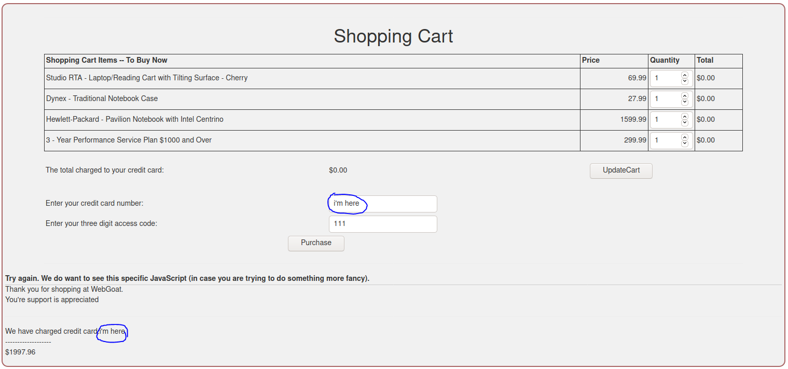
This is an application in WebGoat that demonstrate how Reflected XSS works. See the value “I’m here” in the input field being reflected in the web page? This indicates our application may be vulnerable.
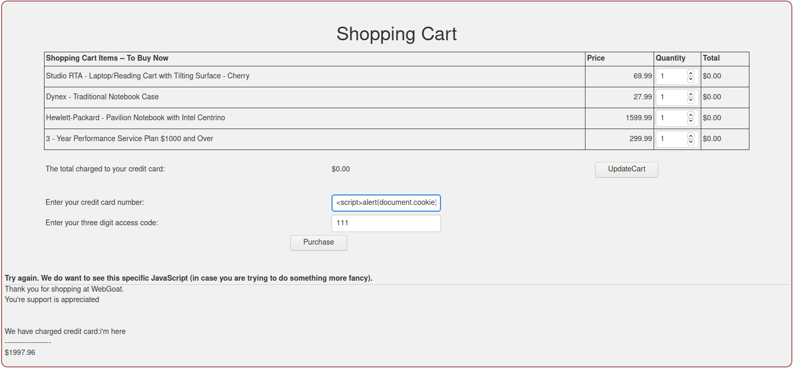
To test the application, we need to input a payload, in this case I’m using <script>alert(document.cookie)</script>.
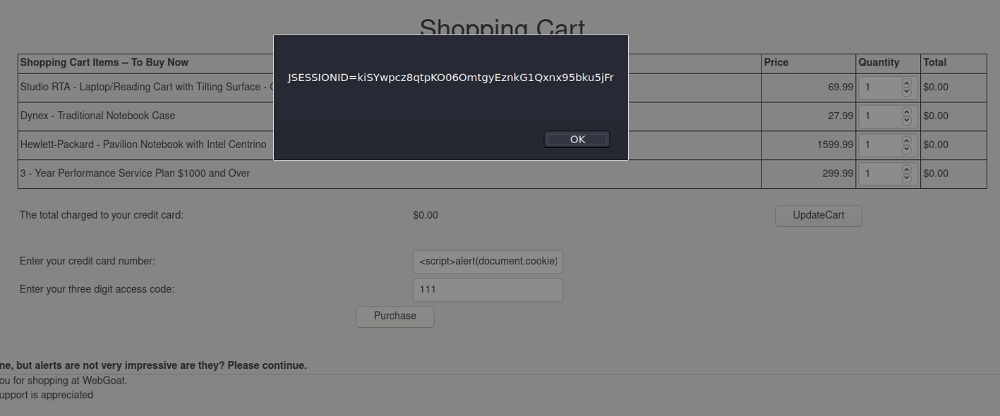
Now we are certain the application is vulnerable. Ok, this is cool and all but we can’t do much with it. Generally reflected XSS can do bad things when the data reflected can be embedded in the URL.
Example:
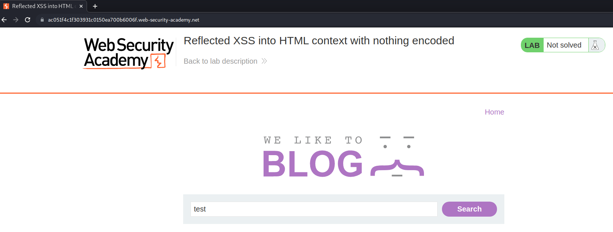 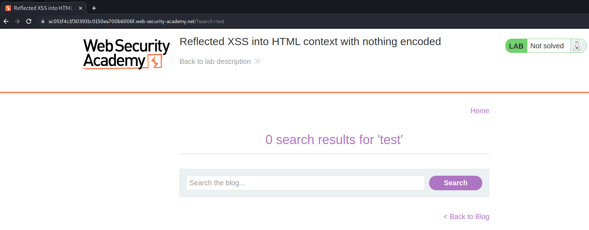 Notice when we search for “test” a message is returned saying “0 search results for ‘test’”, this means the value that we inputted is being reflected to our web page, which means this site maybe vulnerable to Reflected XSS. Is also important to notice there is a search parameter passing “test” as value in the URL bar. This shows that if this input field is vulnerable to Reflected XSS, it can be exploited by sending crafted URLs leading to user’s accounts being hijacked, credentials stolen, sensitive data exfiltrated, and lastly, access to your client computers can be obtained.
Now we need to test to see if this site is actually vulnerable.
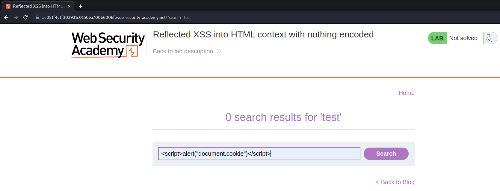
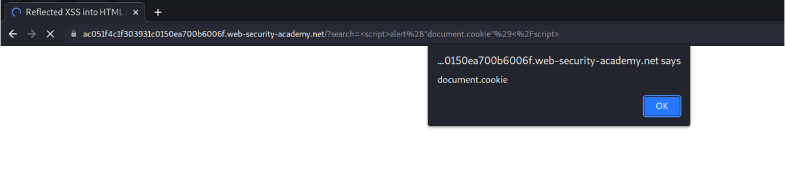
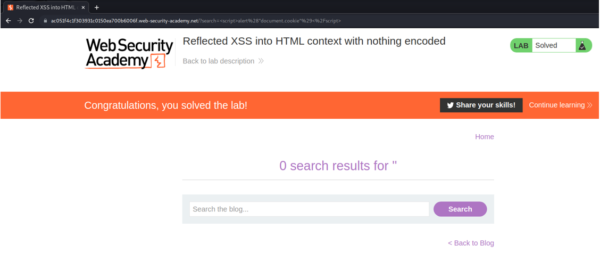
Perfect! We did it. Now we can craft URLs with payloads in the search parameter and use some kind of social engineer in order to make someone click it.
As was said, Stored XSS is much more dangerous because the payload is stored in the server. Knowing how XSS works and specifically how Stored XSS works, it’s obvious to think that this type of vulnerability may happen with a common feature, that fulfils all prerequisites, like a comment section. An important thing to mention is that here there is no need for the reflected value to be passed via URL parameter in order to be dangerous.
Stored XSS #
Example:
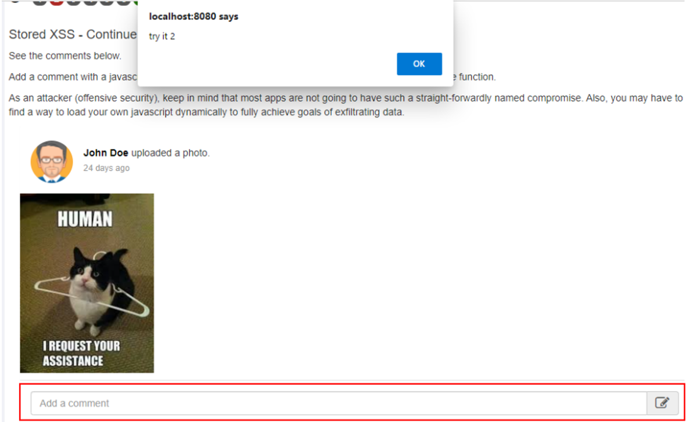
The comment added was: <script>alert(“try it 2”)</script>.
Again, every time someone access this page the script is going to be executed in their browser.
Who to fix it? #
- Both reflected and stored XSS can be fixed by performing the appropriate validation and encoding on the server-side. The best way to provide this proper validation and encoding is, as OWASP recommends, using a security-focused encoding library to make sure these rules are properly implemented.
Reflected fix: #
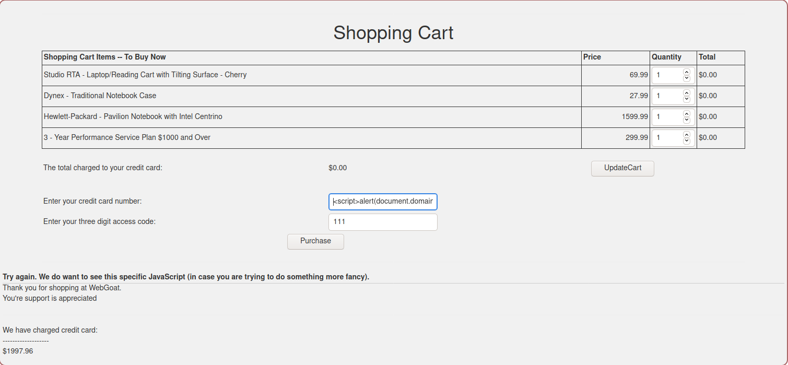
My intention in showing this again is to clarify the next steps.
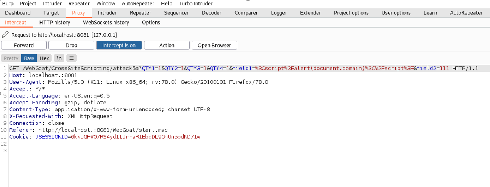
This is called Burp suite. Burp, as we kindly name it, is a proxy. Ok, but what is a proxy? A proxy is something that seats between you and the server you trying to access. Burp intercepts the traffic between your browser and the server you’re communicating with in order to show exactly how this communication is happening. See that field1=%3Cscript%3Ealert(document.domain)%3C%2Fscript%3E in the URL parameter?
You don’t need to worry, it’s just what we inputted in the credit card number field but it’s URL encoded.
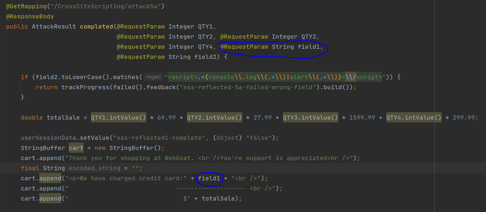
The value of that “field1” parameter in the last image is being assigned to a “field1” variable and this variable is used to create a massage that will return to the user. The problem is that this variable is not being sanitized, which causes the XSS.
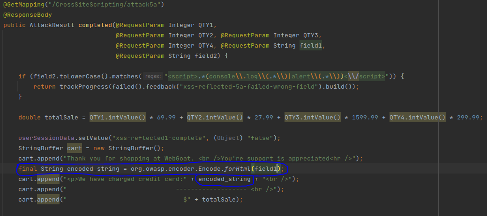
What is happening? We’re simply HTML encoding this string <script>alert(document.domain)</script> in the variable “field1” to <script>alert(document.domain)</script>.
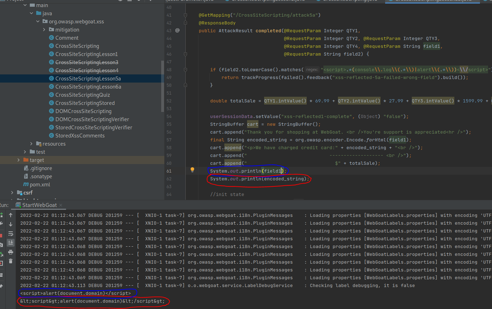
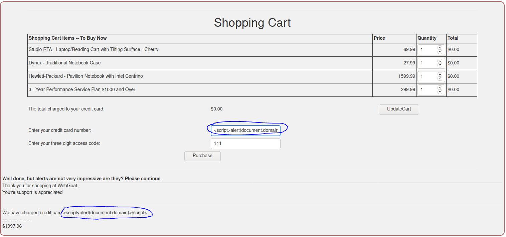 It won’t be executed anymore.
Stored fix: #
The exact same fix is used in here.